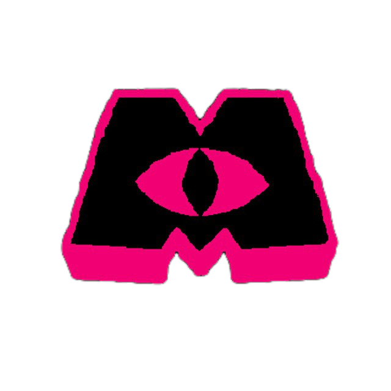

5-слойное шифрование, граф связей, Markdown-редактор
и тёмный стеклянный интерфейс — всё локально, без облаков.
XOR + AES-256-GCM + Argon2id. Три уровня защиты ваших данных
Визуализация связей между заметками. Интерактивный zoom и pan
Редактор, сплит и предпросмотр. Подсветка кода, таблицы, ссылки
Нативный десктоп без Electron. Быстрый запуск, мало памяти
Цветные теги из текста, папки для организации, закрепление заметок
Мгновенное автосохранение с debounce. Ни одна заметка не пропадёт
Ключи выводятся из master-пароля через Argon2id с солью. Каждый слой использует отдельный sub-key.

Monster Dev · TANUKISdesk — приложение для заметок с фокусом на безопасность и скорость. Никаких облаков, никакой телеметрии, только ваши данные под вашим контролем.